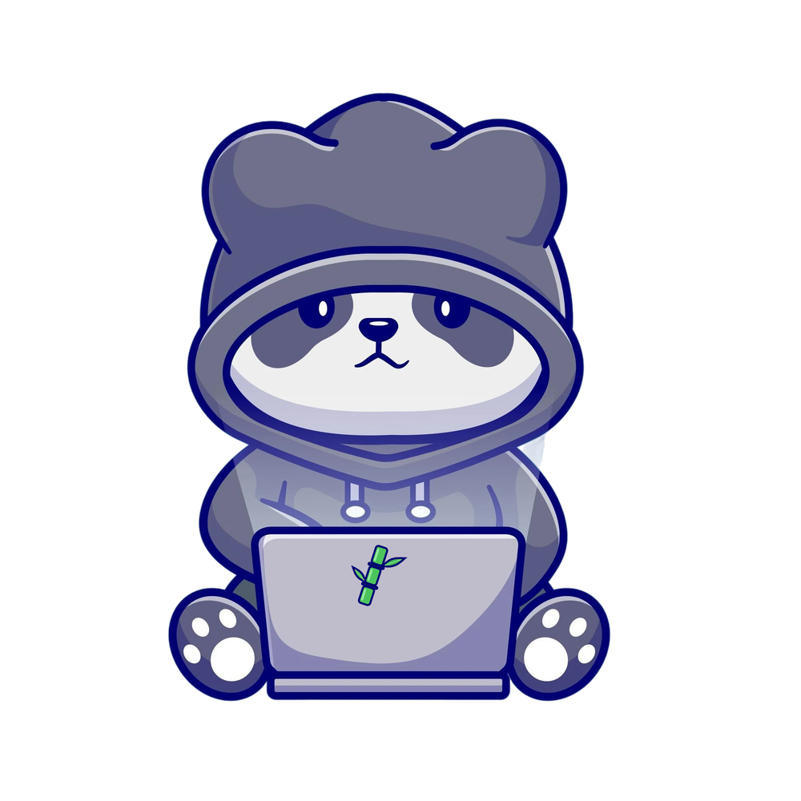

Ajustes de MicroPanda
Los cambios se guardan solos
Él
Su nombre
Responde a este nombre y a "Panda"
Personalidad
🥰 Tierno
😜 Gracioso
💼 Profesional
😐 Serio
Tamaño
Pequeño
Normal
Grande
Muy grande
Ánimo automático
Decide solo cómo se siente
Pasear solo por la barra
De vez en cuando camina unos segundos
Micrófono
🎙️
Aún no lo ha usado
Así lo llama Windows
Usar
El predeterminado de Windows
Probar micrófono
Habla después de apretar "Probar": la barra debe moverse. Si casi no se mueve, sube la sensibilidad.
Voz y oído
Escuchar su nombre
Responder en voz alta
Seguir escuchando después de responder
Sonido al oír su nombre
Sensibilidad
Baja (con ruido)
Normal
Alta (hablas bajito)
Velocidad de la voz
Despacio
Normal
Rápida
Muy rápida
Voz
Dora (mujer)
Alex (hombre)
Santa (hombre)
Procesador
Automático
GPU
CPU
Inteligencia
Modelo de Ollama
Automático
Modo solo charla
No hace cambios en tu PC
Modelo en la nube (opcional)
Usar la nube
Para preguntas difíciles. Si falla, usa Ollama
Apagado (solo local)
Anthropic (Claude)
Compatible con OpenAI
Modelo
Ej. claude-haiku-5-5
Dirección de la API
Solo para "compatible con OpenAI"
Clave de la API
Se guarda cifrada con tu cuenta de Windows
Tú
Tu ciudad
Para el clima
Tu moneda
Para el tipo de cambio
Soles (PEN)
Pesos mexicanos
Pesos colombianos
Pesos argentinos
Pesos chilenos
Bolivianos
Pesos uruguayos
Quetzales
Pesos dominicanos
Euros
Dólares
Pausas activas y agua
Iniciar con Windows
Tu calendario (.ics)
Google Calendar: "dirección secreta en formato iCal". Vacío = Outlook
Actualizaciones
Repositorio en GitHub
Guardado ✓